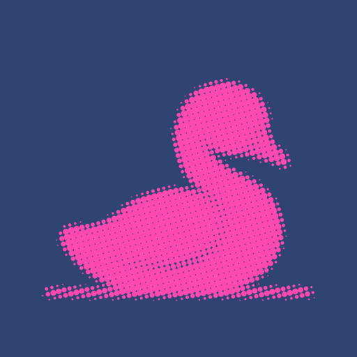
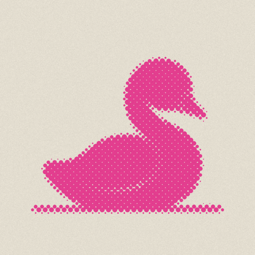
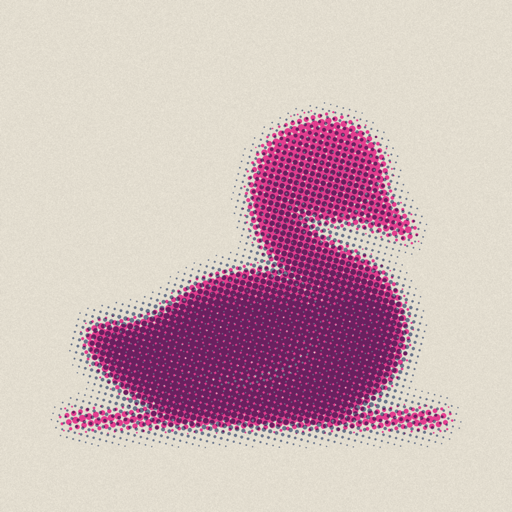
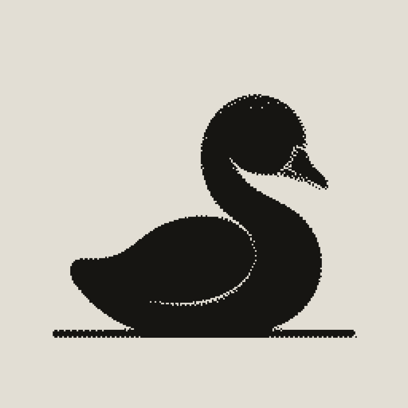

Halftone cygnet icons
Printed from the riso hero's cygnet. Shown large and at real home-screen sizes (60, 40 and 29 points).




Printed from the riso hero's cygnet. Shown large and at real home-screen sizes (60, 40 and 29 points).



